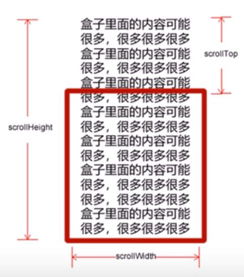
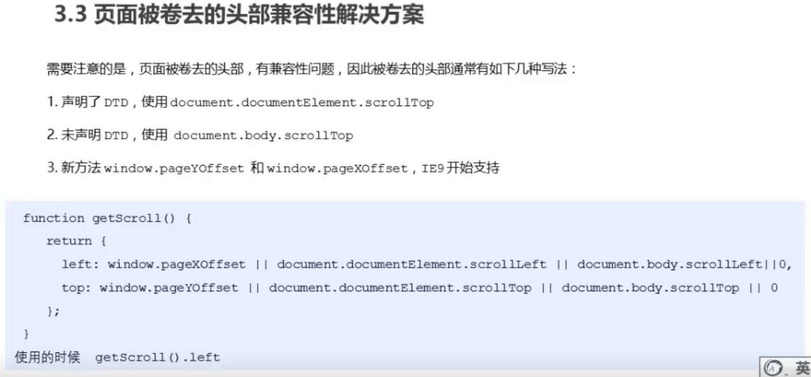

scroll翻译过来就是滚动的，我们使用scroll系列的相关属性可以动态的得到该元素的大小，滚动距离等。
| scroll系列属性 | 作用 |
| element.scrollTop | 返回被卷去的上侧距离，返回数值不带单位 |
| element.scrollLeft | 返回被卷去的左侧距离，返回数值不带单位 |
| element.scrollWidth | 返回自身实际的宽度，不含边框，返回数值不带单位 |
| element.scrollHeight | 返回自身实际的高度，不含边框，返回数值不带单位 |
scroll中具体含义：
scroll是实际大小
如果浏览器的高(或者宽)度不足以显示整个页面时，会自动出现滚动条。当滚动条向下滚动时，页面上面被隐藏掉的高度，我们就称为页面被卷去的头部。滚动条再滚动时会触发onscroll事件。
| 对象 | 含义 | 用法 |
| 页面 | 被卷去的上方 | window.pageYOffset |
| 被卷去的左侧 | window.pageXOffset | |
| 元素 | 被卷去的上方 | element.scrollTop |
| 被卷去的左侧 | element.scrollLeft |
